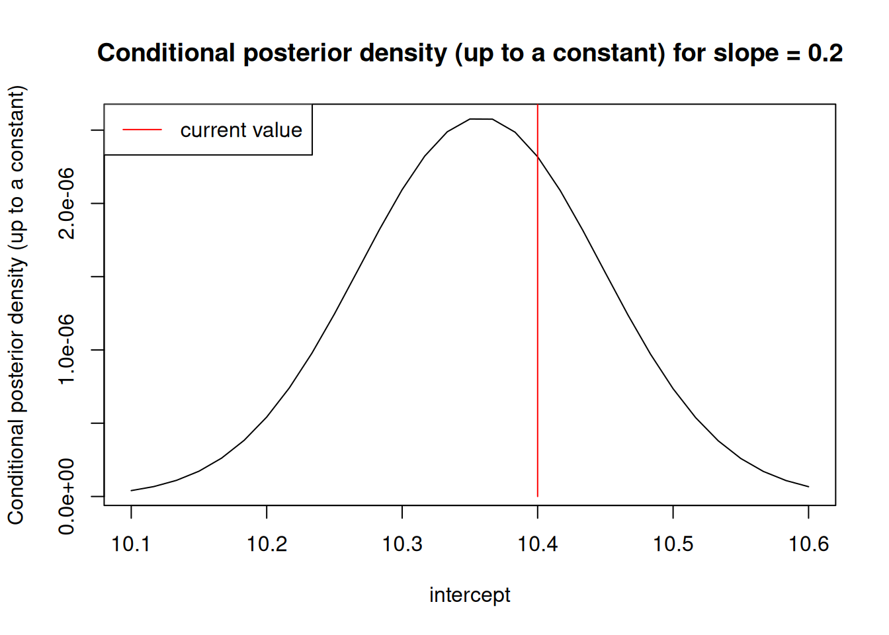
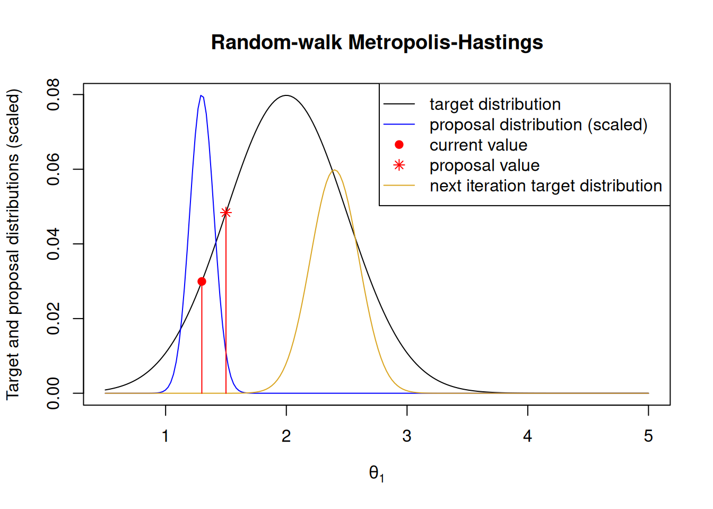
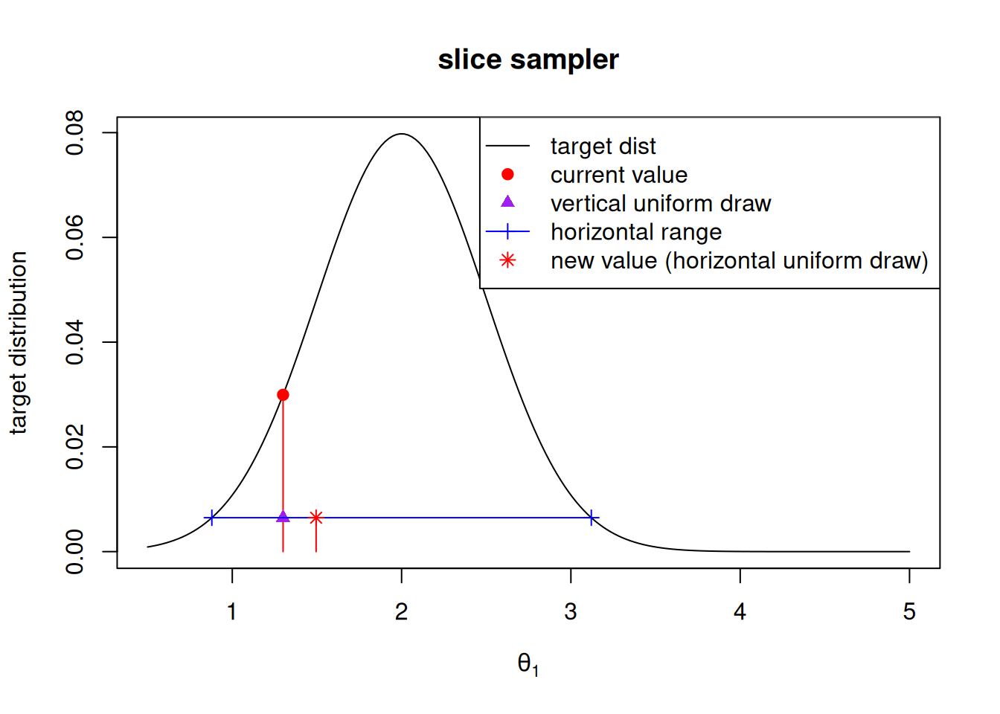
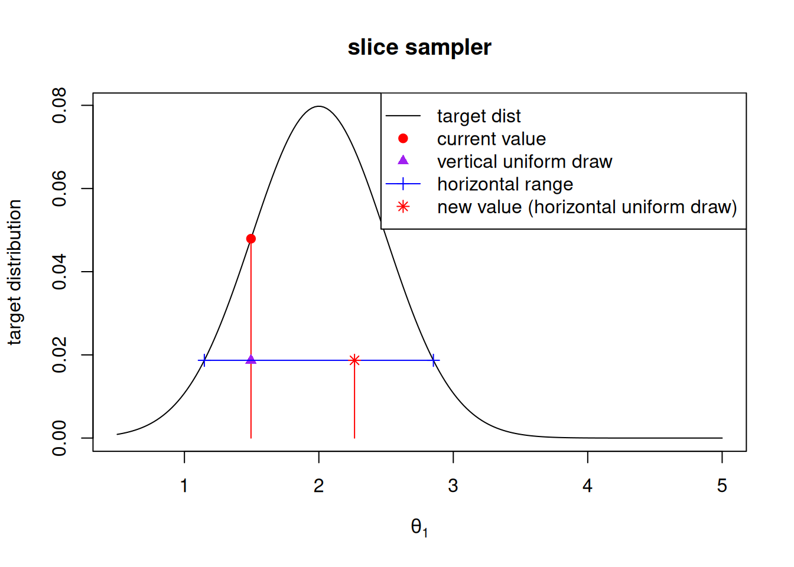
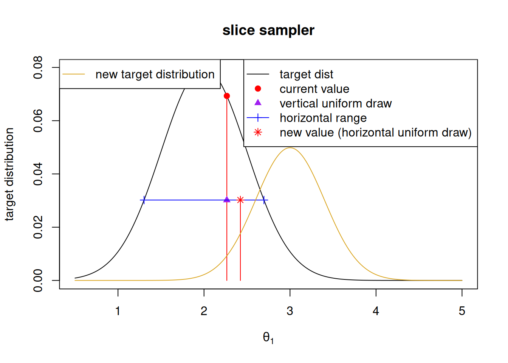
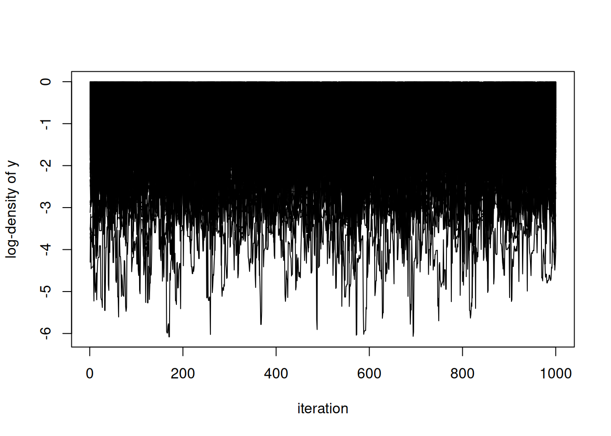

This is the number of effectively independent samples generated per time (second).
ESS is different for every parameter.
MCMC Pace = 1 / MCMC Efficiency, the time (in seconds) needed to generate one effectively independent sample.
Computation time is the same for every parameter: the total time.
We do not count setup steps like model building and compilation as part of computation time. We are more interested in the final MCMC performance.
Whether to include “burn-in” time depends on the goal. Today we won’t.
One needs a reasonable sample just to get a reasonable estimate of ESS.
We generally do not thin when comparing methods because thinning always removes some information from a sample.
Sometimes fancy samplers are too slow (computationally costly) to be worthwhile.
A single number (at the kernel level): Minimum MCMC efficiency
We want a single number to measure the performance of an MCMC.
Often there are many fast-mixing parameters and one or a few slow-mixing ones.
We need all parameters to be mixed well to rely on results.
Therefore our single measure of efficiency is:
Net MCMC efficiency = Minimum MCMC efficiency over all parameters
Why we don’t care as much about mean MCMC efficiency
It is tempting to think mean (across parameters) of MCMC efficiency is a good measure of overall performance.
If some parameters are mixing very well and others very poorly, you should not feel the results are acceptable (unless you have a solid understanding of some non-identifiability in the model).
Alterative single number (at the kernel level): Multivariate MCMC efficiency
Multivariate ESS is defined by the rate of convergence of a multivariate confidence region for the Monte Carlo mean of multiple parameters to the actual posterior mean.
Multivariate efficiency can be defined as multivariate ESS / computation time.
There is some appeal to a multivariate ESS, but really there is no all-purpose performance metric.
How MCMC works: samplers compose a kernel
Not why it works, but what it does.
MCMC generates a sequentially dependent sample whose stationary distribution is the “target” distribution (e.g. posterior).
There are lots of ways to do this, all within the MCMC family of algorithms.
“univariate” or “scalar” samplers update one dimension.
Linear model example: Say current values are slope = 0.2, intercept = 10.4.
Say the next sampler will update the intercept.
The log posterior density for intercept, up to a constant, given slope = 0.2, is:

Choosing a new value depends only on ratios of the surface.
The surface is the “model calculations”.
How MCMC works: calculations for a sampler
\(Y\) = Data
\(\theta\) = Parameters and states, everything being sampled
\(\theta_1\) = current value of dimension being updated
\(\theta_1'\) = possible new value of dimension being updated
\(\theta_F\) = current values of all other dimensions (fixed).
Model calculations are \([Y, \theta] = [Y, (\theta_1', \theta_F)]\).
The needed ratio for many methods is [ = = ]
Conclusion: only the part of \([Y, \theta]\) that involves a particular parameter(s) needs to be calculated.
Code: If \(\theta_1\) ('theta[1]' in code) is the target node for a sampler, the nodes needing calculation are obtained by model$getDependencies(target).
Different methods require different numbers of calculations of \([Y, \theta]\), so some are slow and some are fast.
Some methods also use derivatives of \([Y, \theta]\). These include Hamiltonian Monte Carlo (HMC) and Langevin samplers, both recent additions to NIMBLE (see nimbleHMC).
Gibbs (conjugate) samplers
Possible when we can write \([\theta_1 | \theta_F, Y]\) analytically.
This only works for particular (conjugate) prior-posterior combinations.
Despite sounding simple, there is some computational cost (different than shown above).
Both JAGS and nimble use conjugate samplers by default when available.
We will not spend more time on these.
Adaptive Random-walk Metropolis-Hastings samplers

Current value of the parameter is \(\theta_1\).
Propose a new value (red asterisk) \(\theta_1' \sim N(\theta, \nu)\) (blue distribution). This is centered on the current value, so we call it a “random walk”.
How to accept or reject \(\theta_1'\)?
Calculate ratio of \([Y, (\theta_1', \theta_F)] / [Y, (\theta_1, \theta_F)]\) (using only needed factors).
If the ratio is \(\gt 1\), accept \(\theta'\).
Otherwise that ratio is the “acceptance probability”.
Draw a uniform random variate to decide whether to accept or reject.
Rejection means \(\theta_1^{(k+1)} = \theta_1^{(k)}\)
We have skipped some generality here.
For non-symmetric proposals, there is a ratio of proposal densities involved too.
Computational cost is either
two evaluations of \([Y, (\theta_1', \theta_F)]\) (only the parts that depend on \(\theta_1\)), or
one evaluation of \([Y, (\theta_1', \theta_F)]\) (ditto) and some copying to save previous values.
How to choose \(\nu\)?
By “adaptation”. The algorithm increases or decreases \(\nu\) to achieve theoretically derived optimal accpetance rate.
Remember that the target distribution may change on the next iteration because \(\theta_F\) may have been updated.
Generalizes to multivariate (block) sampling.
This method is computationally cheap but may or may not mix well.
Slice samplers

Based on current \(\theta_1\), pick an auxiliary “height” by a uniform draw (purple triangle).
Determine lower and upper bounds for \(\theta_1\) as shown (blue line between ’+’s).
Draw new value of \(\theta_1\) (red asterisk) uniformly between those bounds.


Slice sampling computational costs
Determining the lower and upper bounds is not simple!
The target distribution changes every time (due to updating of other parameters).
Bounds must be determined by “stepping out” until the target height is below the chosen level (blue).
It is ok to overshoot but then some uniform draws for the new value (blue line) may need to be discarded (after calculations determine they are outside the value range).
Computational cost can be many evaluations of \([Y, (\theta_1, \theta_F)]\) (again, only the necessary factors).
Mixing might typically be better than adaptive random-walk Metropolis-Hastings, but at higher computational cost.
Think of principal components analysis (PCA) for an analogy.
You can think of these as rotated parameter coordinates.
You can think of these as linear combinations of parameters.
Use a slice sampler in each of the new parameter axes.
Adaptation needs to discover good axes.
Computational cost is at least as large as slice samplers in each original parameter.
Computational cost is higher if different parameters require different model calculations (different parts of \([Y, \theta]\)).
Mixing is generally improved if posterior is correlated.
Other samplers in nimble
binary (for Bernoulli variables)
categorical (these are costly).
posterior predictive sampler (for no dependencies)
elliptical slice sampler (for certain scalar or multivariate normal cases)
CAR (conditional autoregressive model) normal sampler
CAR proper sampler
samplers for Bayesian non-parametric (BNP) distributions
random-walk multinomial sampler
random-walk Dirichlet sampler
cross-level sampler
RW_llFunction: a random-walk Metropolis-Hastings that calls any log-likelihood function you provide.
Particle MCMC samplers
Barker gradient-based alternative to multivariate Metropolis-Hastings
Derivative-based samplers
Samplers that use derivatives of \([\mbox{data, parameters}]\):
Hamiltonian Monte Carlo (in nimbleHMC)
Good mixing but at very high computational cost.
Barker samplers (Vogrinc et al. Biometrika, 2023 (DOI: 10.1093/biomet/asac056)
Use one gradient evaluation to make a good multivariate, correlated MH proposal density.
We’ll see an example of using these in the next module.
Modifying an MCMC configuration in nimble
Let’s replace RW (adaptive random-walk Metropolis-Hastings) samplers with slice samplers in the E. cervi example.
Code
# Make a fresh copy of the model# (in case code is used out of order in this doc).DEmodel_copy <- DEmodel$newModel(replicate =TRUE)
Checking model sizes and dimensions
[Note] This model is not fully initialized. This is not an error.
To see which variables are not initialized, use model$initializeInfo().
For more information on model initialization, see help(modelInitialization).
mcmcConf$removeSamplers(params_for_slice) # Nodes will be expandedexpanded_params_for_slice <- DEmodel_copy$expandNodeNames(params_for_slice)expanded_params_for_slice
for(p in expanded_params_for_slice) mcmcConf$addSampler(target = p,type ="slice") # automatically looks for nimbleFunction named "slice" or "sampler_slice"mcmcConf$printSamplers(params_for_slice)
compareMCMCs is an R package from the NIMBLE development team available for managing performance comparisons among MCMC methods, particularly in nimble.
compareMCMCs manages multiple MCMC runs and times steps of preparation (compilation) and sampling.
It can also run other MCMC “engines” via a plug-in system. Currently there are plug-ins for JAGS and Stan. Plug-ins for JAGS and OpenBUGS/WinBUGS (not yet implemented) can use the same model as nimble if it is compatible.
Choice of performance metrics is extensible by a plug-in system.
It can generate comparison figures. Components included are extensible by a plug-in system.
It can convert between different parameter names or parameterizations across MCMC engines.
compareMCMCs is also the name of a deprecated function in nimble. The new compareMCMCs package is a re-designed, re-written way to manage comparisons among MCMC methods.
We will illustrate compareMCMCs by example.
Using compareMCMCs
Say we want to compare a variety of sampling ideas:
Default (built-in)
Slice sampling on all nodes (built-in)
RW block sampling on each (sex-specific) pair of (slope, intercept) parameters.
Automated factor slice sampling on the (slope, intercept) pairs.
JAGS
We will use the following models:
Same as above.
Same as above but written with precision parameterization for dnorms for JAGS.
Writing MCMC configuration functions for compareMCMCs
There are several ways to provide custom MCMC configurations to compareMCMCs. Here is the easiest.
Code
nimbleMCMCdefs =list(nimble_RWblock =function(model) { # Input should be a model mcmcConf <-configureMCMC(model) mcmcConf$removeSamplers(c('sex_int','length_coef')) mcmcConf$addSampler(target =c('sex_int[1]', 'length_coef[1]'),type ="RW_block",control =list(adaptInterval =20, tries =2)) mcmcConf$addSampler(target =c('sex_int[2]', 'length_coef[2]'),type ="RW_block",control =list(adaptInterval =20, tries =2)) mcmcConf # Output should be an MCMC configuration },nimble_AFSSblock =function(model) { mcmcConf <-configureMCMC(model) mcmcConf$removeSamplers(c('sex_int','length_coef')) mcmcConf$addSampler(target =c('sex_int[1]', 'length_coef[1]'),type ="AF_slice",control =list(sliceAdaptFactorInterval =20)) mcmcConf$addSampler(target =c('sex_int[2]', 'length_coef[2]'),type ="AF_slice",control =list(sliceAdaptFactorInterval =20)) mcmcConf # Output should be an MCMC configuration },nimble_log_sigma =function(model) { mcmcConf <-configureMCMC(model) mcmcConf$removeSamplers('farm_sd') mcmcConf$addSampler(target ='farm_sd',type ="RW",control =list(log =TRUE)) mcmcConf })
# Run this code to generate your own resultsmcmcResults <-c(mcmcResults_nimble, mcmcResults_jags) ## These are lists of MCMCresult objectsmake_MCMC_comparison_pages(mcmcResults, modelName ="deer_ecervi_mcmc_results")
ts.plot(results$derived$logProb, ylab ="log-density of y", xlab ="iteration")

Source Code
---title: "Comparing and customizing MCMC in `nimble`"subtitle: "NIMBLE Alaska ASA 2026 Workshop"author: "NIMBLE Development Team"date: "June 2026"format: html: theme: cosmo css: ../styles.css toc: true code-copy: true code-block-background: true code-fold: show code-tools: trueexecute: freeze: auto---<style>slides > slide {overflow-x:auto!important;overflow-y:auto!important;}</style>```{r loadLibs, include=FALSE}knitr::opts_chunk$set(echo =TRUE,cache =TRUE)doMCMC <-TRUElibrary(nimble)if(!require(mvtnorm))warning("This Rmd file needs package mvtnorm.")if(!require(coda))warning("This Rmd file needs package coda")has_compareMCMCs <-require(compareMCMCs)if(!has_compareMCMCs)warning("This Rmd file uses package compareMCMCs from github. Sections using it will be skipped.")has_rjags <-require(rjags)if(!has_rjags)warning("This Rmd file uses package rjags. Sections using it will be skipped.")doComparisons <-FALSE```Agenda=====1. How we compare MCMC kernels * MCMC efficiency2. How MCMC works: an introduction to different samplers - Mixing vs. computational cost3. Modifying an MCMC configuration in `nimble`4. (Optional) Using `compareMCMCs`Load the deer E. cervi example for later:=====```{r setup}source(file.path("..", "examples", "DeerEcervi", "load_DeerEcervi.R"), chdir =TRUE)set.seed(123)DEmodel <-nimbleModel(DEcode,constants = DEconstants,data =list(Ecervi_01 = DeerEcervi$Ecervi_01),inits =DEinits())```Bayes' law (conditional probability)=====In a hierarchical model, we typically have:- params: top-level parameters, e.g. coefficients and std. deviations.- states: random effects or latent states, e.g. farm effects- data\[[\mbox{params, states | data}] = \frac{[\mbox{data | states, params}][\mbox{states | params}][\mbox{params}]}{[\mbox{data}]}\]- $[\cdot]$ indicates probability density or mass.- Denominator is hard to calculate but it is a constant.- I will refer to the numerator = $[\mbox{data, states, params}]$ as the "model calculations."Monte Carlo samples of the posterior: Toy example=====- Toy example: slope and intercept of a simple linear model with some simulated data.- See Rmd file for source code.```{r lmModel, include=FALSE}lmCode <-nimbleCode({ sigma ~dunif(0, 20) intercept ~dnorm(0, sd =100) slope ~dnorm(0, sd =100)for(i in1:n) { y[i] ~dnorm(intercept + slope * x[i], sd = sigma) }})n <-5lmModel <-nimbleModel(lmCode, constants =list(n = n))lmModel$slope <-0.6lmModel$intercept <-10lmModel$sigma <-0.2lmModel$x <-seq(0, 1, length = n)lmModel$calculate()set.seed(0)lmModel$simulate('y')lmModel$setData('y')# {# plot(lmModel$x, lmModel$y, pch = 19)# abline(lm(lmModel$y ~ lmModel$x))# }``````{r show-lm-data}data.frame(x = lmModel$x, y = lmModel$y)```Monte Carlo samples of the posterior: Toy example=====Here is the true posterior density (assuming flat or effectively flat priors).```{r calc-lm-posterior, include=FALSE}log_posterior_numerator <-function(params) { lmModel$intercept <- params[1] lmModel$slope <- params[2] lmModel$calculate()}optim_map <-optim(c(10, 0.8), log_posterior_numerator, control =list(fnscale =-1))optim_map$parlmFit <-lm(lmModel$y ~ lmModel$x)lmCoef <-coefficients(summary(lm(lmModel$y ~ lmModel$x))) ## Check that they match mle.lmCoef## Make a grid +/- 3 standard errors around the MLEintercept_grid <- lmCoef['(Intercept)', 'Estimate'] + lmCoef['(Intercept)', 'Std. Error'] *seq(-3, 3, length =21)slope_grid <- lmCoef['lmModel$x', 'Estimate'] + lmCoef['lmModel$x', 'Std. Error'] *seq(-3, 3, length =21)llh_surface <-matrix(0, nrow =length(intercept_grid), ncol =length(slope_grid))for(i inseq_along(intercept_grid))for(j inseq_along(slope_grid)) llh_surface[i, j] <-log_posterior_numerator(c(intercept_grid[i], slope_grid[j]))library(mvtnorm)## we will "cheat" and use the mlesamples <-rmvnorm(1000, mean = lmCoef[, "Estimate"], sigma =vcov(lmFit))``````{r contour-lm-1, echo=FALSE}contour(intercept_grid, slope_grid, llh_surface, levels = optim_map$value -0.01-0:5,main ="posterior density contours",xlab ="intercept", ylab ="slope")```Monte Carlo samples of the posterior: Toy example=====Our goal is a Monte Carlo sample from the posterior:```{r contour-lm-2, echo=FALSE}{contour(intercept_grid, slope_grid, llh_surface, levels = optim_map$value -0.01-0:5,main ="posterior log density contours",xlab ="intercept", ylab ="slope")points(samples, pch ='.', col ='red')}```MCMC kernel=====In this section:- $\theta$: All parameters and states being sampled.- $\theta_{i}$: Parameter (dimension) i of $\theta$. - $\theta^{(k)}$: Sample from iteration $k$. This is the $k$-th row of MCMC output.An *MCMC kernel* comprises one or more samplers that define $P(\theta^{(k+1)} | \theta^{(k)})$.- $P(\theta^{(k+1)} | \theta^{(k)})$ is the distribution of one row of MCMC output given the previous row.- Informally, today, "an MCMC" = "an MCMC kernel".- An *MCMC sampler* updates one or more dimensions of $\theta$.- Samplers are sometimes called "updaters".- Kernels are sometimes called "samplers". This is reasonable (because a sampler is a kernel for its dimension(s)), but confusing. Today: - An MCMC (kernel) comprises one or more samplers. - An MCMC samples all desired dimensions (parameters or states). - A sampler samples a subset of desired dimensions.- The posterior distribution is sometimes called the "target distribution".MCMC kernel=====A `nimble` MCMC is an ordered set of samplers.Example:- Sampler 1 (Update $\theta_1$): $(\theta_1^{(k)}, \theta_2^{(k)}, \theta_3^{(k)}, \theta_4^{(k)}) \rightarrow (\theta_1^{(k+1)}, \theta_2^{(k)}, \theta_3^{(k)}, \theta_4^{(k)})$- Sampler 2 (Update $\theta_2$ and $\theta_3$): $(\theta_1^{(k+1)}, \theta_2^{(k)}, \theta_3^{(k)}, \theta_4^{(k)}) \rightarrow (\theta_1^{(k+1)}, \theta_2^{(k+1)}, \theta_3^{(k+1)}, \theta_4^{(k)})$- Sampler 3 (Update $\theta_4$): $(\theta_1^{(k+1)}, \theta_2^{(k+1)}, \theta_3^{(k+1)}, \theta_4^{(k)}) \rightarrow (\theta_1^{(k+1)}, \theta_2^{(k+1)}, \theta_3^{(k+1)}, \theta_4^{(k+1)})$MCMC kernel=====Let's see nimble's default samplers for the E. cervi example. Later we will cover modification of the MCMC configuration.```{r mcmcConf}mcmcConf <-configureMCMC(DEmodel)mcmcConf$printSamplers()```This is a list of sampler assignments. It does not contain the samplers themselves.It's the list of parts we plan to assemble for the MCMC machine. It is not the machine itself.We can modify the list of parts before we build the MCMC machine.MCMC efficiency=====Mixing and computation time are both important to MCMC performance.Let's get an MCMC sample for the E. cervi example.```{r runMCMC, eval=doMCMC}# By default, top-level parameters are monitored.# Let's get these random effects too. mcmcConf$addMonitors("farm_effect")DEmcmc1 <-buildMCMC(mcmcConf)# Example of compiling model and MCMC in one call, which returns a list.compiled <-compileNimble(DEmodel, DEmcmc1)DEsamples <-runMCMC(compiled$DEmcmc1, niter =10000, nburnin =1000)```Better vs. worse mixing=====Mixing and computation time are both important to MCMC performance.*Do not get excited about an MCMC just because it runs quickly.*Mixing refers to how "quickly" (per iteration, not clock time) the MCMC moves around the posterior ("target distribution").Lots of MCMC theory ignores computational cost and focuses on mixing.Let's see better vs. worse mixing:```{r plot-samples, eval=doMCMC}plot(DEsamples[,"length_coef[1]"], type ='l') ## Happens to mix wellplot(DEsamples[,"sex_int[1]"], type ='l') ## Doesn't mix as well```Measuring mixing as effective sample size (ESS)=====- *Effective sample size (ESS)* is the equivalent number ofindependent samples in an MCMC chain for one parameter.### What does "equivalent number of independent samples" mean?- If $m$ samples from the posterior of a scalar parameter were drawn *independently*, $\theta^{(k)}$, $k = 1\ldots m$.$\mbox{Var}\left[ \bar{\theta} \right] = \mbox{Var}\left[ \frac{1}{m} \sum_{k=1}^m \theta^{(k)} \right] = \frac{\mbox{Var} \left[ \theta \right] }{m}$- Instead, samples are sequentially non-independent, and we have$\mbox{Var}\left[ \bar{\theta} \right] = \frac{\mbox{Var} \left[ \theta \right] }{\mbox{ESS}}$where ESS is the *Effective Sample Size*.Examples of effective sample size=====The `effectiveSize` function of library `coda` gives one estimator of ESS. (Library `mcmcse` has other estimators.)Each dimension (parameter or state) has a different ESS.```{r ESS, eval=doMCMC}dim(DEsamples) ## Independent samples would have ESS=9000effectiveSize(DEsamples)```We can see that the ESS is considerably smaller than the number of samples.MCMC Efficiency (at the parameter level)=====MCMC efficiency = $\frac{\mbox{effective sample size (ESS)}}{\mbox{computation time}}$- This is the number of effectively independent samples generated per time (second).- ESS is different for every parameter.- MCMC Pace = 1 / MCMC Efficiency, the time (in seconds) needed to generate one effectively independent sample.- Computation time is the same for every parameter: the total time.- We do not count setup steps like model building and compilation as part of computation time. We are more interested in the final MCMC performance.- Whether to include "burn-in" time depends on the goal. Today we won't.- One needs a reasonable sample just to get a reasonable estimate of ESS.- We generally do not thin when comparing methods because **thinning always removes some information from a sample**. - Sometimes fancy samplers are too slow (computationally costly) to be worthwhile.A single number (at the kernel level): Minimum MCMC efficiency=====- We want a single number to measure the performance of an MCMC.- Often there are many fast-mixing parameters and one or a fewslow-mixing ones.- We need all parameters to be mixed well to rely on results.- Therefore our single measure of efficiency is:**Net MCMC efficiency = Minimum MCMC efficiency over all parameters**Why we don't care as much about mean MCMC efficiency=====- It is tempting to think mean (across parameters) of MCMC efficiency is a good measure of overall performance.- If some parameters are mixing very well and others very poorly, you should not feel the results are acceptable (unless you have a solid understanding of some non-identifiability in the model).Alterative single number (at the kernel level): Multivariate MCMC efficiency=====- [Vats et al. (2019, *Biometrika*)](https://doi.org/10.1093/biomet/asz002) proposed a *multivariate effective sample size (ESS)*.- Multivariate ESS is defined by the rate of convergence of a multivariate confidence region for the Monte Carlo mean of multiple parameters to the actual posterior mean.- Multivariate efficiency can be defined as multivariate ESS / computation time.- There is some appeal to a multivariate ESS, but really there is no all-purpose performance metric.How MCMC works: samplers compose a kernel=====- Not *why* it works, but *what* it does.- MCMC generates a sequentially dependent sample whose stationary distribution is the "target" distribution (e.g. posterior).- There are lots of ways to do this, all within the MCMC family of algorithms.- "univariate" or "scalar" samplers update one dimension.- "block" samplers update multiple dimensions together.How MCMC works: calculations for a sampler=====- Linear model example: Say current values are slope = 0.2, intercept = 10.4.- Say the next sampler will update the intercept.- The log posterior density for intercept, up to a constant, given slope = 0.2, is:```{r lmConditional, echo=FALSE}intercept_grid_given_slope <-seq(10.1, 10.6, length =31)llh_surface_given_slope <-apply(matrix(intercept_grid_given_slope), 1, function(int) log_posterior_numerator(c(int, 0.2))){plot(intercept_grid_given_slope, exp(llh_surface_given_slope), type ='l',main ="Conditional posterior density (up to a constant) for slope = 0.2",ylab ="Conditional posterior density (up to a constant)",xlab ="intercept")lines(c(10.4, 10.4), c(0, 0.1), col ='red')legend("topleft", col ="red", legend ="current value", lty =1)}```Choosing a new value depends only on **ratios** of the surface.The surface is the "model calculations".How MCMC works: calculations for a sampler=====$Y$ = Data$\theta$ = Parameters and states, everything being sampled$\theta_1$ = current value of dimension being updated$\theta_1'$ = possible new value of dimension being updated$\theta_F$ = current values of all other dimensions (fixed).Model calculations are $[Y, \theta] = [Y, (\theta_1', \theta_F)]$.The needed ratio for many methods is\[\frac{[Y, (\theta_1', \theta_F)]}{[Y, (\theta_1, \theta_F)]} = \frac{(\mbox{Factors using } \theta_1')(\mbox{Factors not using } \theta_1')}{(\mbox{Factors using } \theta_1)(\mbox{Factors not using } \theta_1)} = \frac{\mbox{Factors using } \theta_1'}{\mbox{Factors using } \theta_1} \]Conclusion: only the part of $[Y, \theta]$ that involves a particular parameter(s) needs to be calculated.Code: If $\theta_1$ (`'theta[1]'` in code) is the `target` node for a sampler, the nodes needing calculation are obtained by `model$getDependencies(target)`.Different methods require different numbers of calculations of $[Y, \theta]$, so some are slow and some are fast.Some methods also use derivatives of $[Y, \theta]$. These include Hamiltonian Monte Carlo (HMC) and Langevin samplers, both recent additions to NIMBLE (see `nimbleHMC`).Gibbs (conjugate) samplers=====- Possible when we can write $[\theta_1 | \theta_F, Y]$ analytically.- This only works for particular (*conjugate*) prior-posterior combinations.- Despite sounding simple, there is some computational cost (different than shown above).- Both JAGS and nimble use conjugate samplers by default when available.- We will not spend more time on these.Adaptive Random-walk Metropolis-Hastings samplers=====```{r, echo=FALSE}theta1 <-seq(0.5, 5, length =200)targetDist <-0.1*dnorm(theta1, 2, 0.5)current <-1.3proposalDist <-dnorm(theta1, current, sd =0.1)proposalDisplayScale <-max(proposalDist)/max(targetDist)proposalDist <- proposalDist / proposalDisplayScaleproposal <-1.5nextTargetDist <-0.03*dnorm(theta1, 2.4, 0.2){plot(theta1, targetDist, type ='l', col ='black',main ="Random-walk Metropolis-Hastings",ylab ="Target and proposal distributions (scaled)",xlab =expression(theta[1]))points(theta1, proposalDist, type ='l', col ='blue')points(theta1, nextTargetDist, type ='l', col ='goldenrod')points(current, 0.1*dnorm(current, 2, 0.5), pch =19, col ='red')points(proposal, 0.1*dnorm(proposal, 2, 0.5), pch =8, col ='red')lines(c(current, current), c(0, 0.1*dnorm(current, 2, 0.5)), col ='red')lines(c(proposal, proposal), c(0, 0.1*dnorm(proposal, 2, 0.5)), col ='red')legend("topright", lty =c(1,1,0,0, 1), pch =c(NA, NA, 19, 8, NA), col =c('black','blue','red','red', 'goldenrod'),legend =c('target distribution', 'proposal distribution (scaled)', 'current value', 'proposal value', 'next iteration target distribution' ))}```- Current value of the parameter is $\theta_1$.- Propose a new value (red asterisk) $\theta_1' \sim N(\theta, \nu)$ (blue distribution). This is centered on the current value, so we call it a "random walk".- How to accept or reject $\theta_1'$? - Calculate ratio of $[Y, (\theta_1', \theta_F)] / [Y, (\theta_1, \theta_F)]$ (using only needed factors). - If the ratio is $\gt 1$, accept $\theta'$. - Otherwise that ratio is the "acceptance probability". - Draw a uniform random variate to decide whether to accept or reject. - Rejection means $\theta_1^{(k+1)} = \theta_1^{(k)}$- We have skipped some generality here. - For non-symmetric proposals, there is a ratio of proposal densities involved too.- Computational cost is either - two evaluations of $[Y, (\theta_1', \theta_F)]$ (only the parts that depend on $\theta_1$), or - one evaluation of $[Y, (\theta_1', \theta_F)]$ (ditto) and some copying to save previous values.- How to choose $\nu$? - By "adaptation". The algorithm increases or decreases $\nu$ to achieve theoretically derived optimal accpetance rate. - Remember that the target distribution may change on the next iteration because $\theta_F$ may have been updated.- Generalizes to multivariate (block) sampling.- This method is computationally cheap but may or may not mix well.Slice samplers=====```{r, echo = FALSE}theta1grid <-seq(0.5, 5, length =200)targetDist <-function(theta1) {0.1*dnorm(theta1, 2, 0.5)}targetDistGrid <-targetDist(theta1grid)current <-1.3origCurrent <- currentupdate <-function(current, targetDist, mean) { currentF <-targetDist(current) u <-runif(1, 0, currentF) leftBound <-uniroot(function(x) (targetDist(x)-u), lower =-10, upper = mean)$root rightBound <-uniroot(function(x) (targetDist(x)-u), lower = mean, upper =10)$root updated <-runif(1, leftBound, rightBound)list(lower = leftBound, upper = rightBound, u = u, currentF = currentF, updated = updated)}set.seed(345)u1 <-update(current, targetDist, 2)u2 <-update(u1$updated, targetDist, 2)u3 <-update(u2$updated, targetDist, 2)slicePlotter <-function(u, current) {points(current, targetDist(current), pch =19, col ='red')lines(c(current, current), c(0, targetDist(current)), col ='red')points(current, u$u, pch =17, col ='purple')points(u$lower, u$u, pch=3, col ='blue')points(u$upper, u$u, pch =3, col ='blue')lines(c(u$lower, u$upper), c(u$u, u$u), type ='l', col ='blue')points(u$updated, u$u, pch =8, col ='red')lines(c(u$updated, u$updated), c(0, u$u), type ='l', col ='red') u$updated}sliceLegend <-function() {legend("topright",lty =c(1, 0, 0, 1, 0),legend =c('target dist', 'current value', 'vertical uniform draw', 'horizontal range', 'new value (horizontal uniform draw)'),pch =c(NA, 19, 17, 3, 8),col =c('black', 'red', 'purple','blue', 'red'))}``````{r, echo=FALSE}{plot(theta1grid, targetDistGrid, type ='l', col ='black',main ='slice sampler',ylab ="target distribution",xlab =expression(theta[1])) current <- origCurrentfor(u inlist(u1)) { current <-slicePlotter(u, current) }sliceLegend()}```- Based on current $\theta_1$, pick an auxiliary "height" by a uniform draw (purple triangle).- Determine lower and upper bounds for $\theta_1$ as shown (blue line between '+'s).- Draw new value of $\theta_1$ (red asterisk) uniformly between those bounds.```{r, echo=FALSE}{plot(theta1grid, targetDistGrid, type ='l', col ='black',main ='slice sampler',ylab ="target distribution",xlab =expression(theta[1])) current <- u1$updatedfor(u inlist(u2)) { current <-slicePlotter(u, current) }sliceLegend()}``````{r, echo=FALSE}{plot(theta1grid, targetDistGrid, type ='l', col ='black',main ='slice sampler',ylab ="target distribution",xlab =expression(theta[1])) current <- u2$updatedfor(u inlist(u3)) { current <-slicePlotter(u, current) }points(theta1grid, 0.05*dnorm(theta1grid, 3, .4), type ='l', col ='goldenrod')sliceLegend()legend("topleft", col ="goldenrod", pch =NA, lty =1, legend ="new target distribution")}```Slice sampling computational costs=====- Determining the lower and upper bounds is not simple!- The target distribution changes every time (due to updating of other parameters).- Bounds must be determined by "stepping out" until the target height is below the chosen level (blue). - It is ok to overshoot but then some uniform draws for the new value (blue line) may need to be discarded (after calculations determine they are outside the value range).- Computational cost can be *many* evaluations of $[Y, (\theta_1, \theta_F)]$ (again, only the necessary factors).- Mixing might typically be better than adaptive random-walk Metropolis-Hastings, but at higher computational cost.Multivariate random-walk Metropolis-Hastings samplers=====- Make proposals in multiple dimensions using multivariate normal proposals.- Works ok in a moderate number of dimensions.- Does not work well in many dimensions.- In more dimensions, it is harder to make large proposal steps.- Control parameter `tries` lets you do multiple propose-accept-reject steps as one sampler.- Adaptation must determine good scale and correlations for proposals. Finding these can be slow.- More important for dimensions with high posterior correlation.- If posterior dimensions are only weakly correlated, it is usually better to alternate dimensions with scalar samplers.- Computational cost depends on which parts of $[Y, \theta]$ are needed. - Some parameters might share the same calculations. - Some parameters might require different calculations, in which case the block sampler will need to calculate their union.- May not work well when the scale of interest for different dimensions is very different. - nimble generates a message about this.Multivariate slice samplers=====* Automated factor slice sampler of [Tibbits et al. (2014)](https://www.tandfonline.com/doi/abs/10.1080/10618600.2013.791193)* Choose new parameter axes (still orthogonal). - Think of principal components analysis (PCA) for an analogy. - You can think of these as rotated parameter coordinates. - You can think of these as linear combinations of parameters.* Use a slice sampler in each of the new parameter axes.* Adaptation needs to discover good axes.* Computational cost is at least as large as slice samplers in each original parameter. * Computational cost is higher if different parameters require different model calculations (different parts of $[Y, \theta]$).* Mixing is generally improved if posterior is correlated.Other samplers in nimble=====- binary (for Bernoulli variables)- categorical (these are *costly*).- posterior predictive sampler (for no dependencies)- elliptical slice sampler (for certain scalar or multivariate normal cases)- CAR (conditional autoregressive model) normal sampler- CAR proper sampler- samplers for Bayesian non-parametric (BNP) distributions- random-walk multinomial sampler- random-walk Dirichlet sampler- cross-level sampler- `RW_llFunction`: a random-walk Metropolis-Hastings that calls any log-likelihood function you provide.- Particle MCMC samplers- Barker gradient-based alternative to multivariate Metropolis-HastingsDerivative-based samplers =====Samplers that use derivatives of $[\mbox{data, parameters}]$:- Hamiltonian Monte Carlo (in `nimbleHMC`) - Good mixing but at very high computational cost.- Barker samplers (Vogrinc et al. Biometrika, 2023 (DOI: 10.1093/biomet/asac056) - Use one gradient evaluation to make a good multivariate, correlated MH proposal density.We'll see an example of using these in the next module.Modifying an MCMC configuration in `nimble`=====Let's replace RW (adaptive random-walk Metropolis-Hastings) samplers with slice samplers in the E. cervi example.```{r, eval=doMCMC}# Make a fresh copy of the model# (in case code is used out of order in this doc).DEmodel_copy <- DEmodel$newModel(replicate =TRUE) mcmcConf <-configureMCMC(DEmodel_copy)params_for_slice <-"farm_effect[1:6]"# Notice: Not just one nodemcmcConf$printSamplers(params_for_slice)mcmcConf$removeSamplers(params_for_slice) # Nodes will be expandedexpanded_params_for_slice <- DEmodel_copy$expandNodeNames(params_for_slice)expanded_params_for_slicefor(p in expanded_params_for_slice) mcmcConf$addSampler(target = p,type ="slice") # automatically looks for nimbleFunction named "slice" or "sampler_slice"mcmcConf$printSamplers(params_for_slice)mcmc <-buildMCMC(mcmcConf)compiled <-compileNimble(DEmodel_copy, mcmc)samples <-runMCMC(compiled$mcmc, niter =10000, nburnin =1000)effectiveSize(samples)```(Optional) Using `compareMCMCs`=====`compareMCMCs` is an R package from the NIMBLE development team available for managing performance comparisons among MCMC methods, particularly in `nimble`.- `compareMCMCs` manages multiple MCMC runs and times steps of preparation (compilation) and sampling.- It can also run other MCMC "engines" via a plug-in system. Currently there are plug-ins for JAGS and Stan. Plug-ins for JAGS and OpenBUGS/WinBUGS (not yet implemented) can use the same model as `nimble` if it is compatible.- Choice of performance metrics is extensible by a plug-in system.- It can generate comparison figures. Components included are extensible by a plug-in system.- It can convert between different parameter names or parameterizations across MCMC engines.`compareMCMCs` is also the name of a deprecated function in nimble. The new `compareMCMCs` package is a re-designed, re-written way to manage comparisons among MCMC methods.We will illustrate `compareMCMCs` by example.Using `compareMCMCs`=====Say we want to compare a variety of sampling ideas:1. Default (built-in)2. Slice sampling on all nodes (built-in)3. RW block sampling on each (sex-specific) pair of (slope, intercept) parameters.4. Automated factor slice sampling on the (slope, intercept) pairs.5. JAGSWe will use the following models:1. Same as above.2. Same as above but written with precision parameterization for `dnorm`s for JAGS.Writing MCMC configuration functions for `compareMCMCs`=====There are several ways to provide custom MCMC configurations to `compareMCMCs`. Here is the easiest.```{r}nimbleMCMCdefs =list(nimble_RWblock =function(model) { # Input should be a model mcmcConf <-configureMCMC(model) mcmcConf$removeSamplers(c('sex_int','length_coef')) mcmcConf$addSampler(target =c('sex_int[1]', 'length_coef[1]'),type ="RW_block",control =list(adaptInterval =20, tries =2)) mcmcConf$addSampler(target =c('sex_int[2]', 'length_coef[2]'),type ="RW_block",control =list(adaptInterval =20, tries =2)) mcmcConf # Output should be an MCMC configuration },nimble_AFSSblock =function(model) { mcmcConf <-configureMCMC(model) mcmcConf$removeSamplers(c('sex_int','length_coef')) mcmcConf$addSampler(target =c('sex_int[1]', 'length_coef[1]'),type ="AF_slice",control =list(sliceAdaptFactorInterval =20)) mcmcConf$addSampler(target =c('sex_int[2]', 'length_coef[2]'),type ="AF_slice",control =list(sliceAdaptFactorInterval =20)) mcmcConf # Output should be an MCMC configuration },nimble_log_sigma =function(model) { mcmcConf <-configureMCMC(model) mcmcConf$removeSamplers('farm_sd') mcmcConf$addSampler(target ='farm_sd',type ="RW",control =list(log =TRUE)) mcmcConf })```Example models for `compareMCMCs`=====Make a version compatible with JAGS```{r}DEcode_jags <-nimbleCode({for(i in1:2) { length_coef[i] ~dnorm(0, 1.0E-6) # precisions sex_int[i] ~dnorm(0, 1.0E-6) } farm_sd ~dunif(0, 20) farm_precision <-1/(farm_sd*farm_sd)for(i in1:num_farms) { farm_effect[i] ~dnorm(0, farm_precision) # precision }for(i in1:num_animals) {logit(disease_probability[i]) <- sex_int[ sex[i] ] + length_coef[ sex[i] ]*length[i] + farm_effect[ farm_ids[i] ] Ecervi_01[i] ~dbern(disease_probability[i]) }})```Call `compareMCMCs` for nimble cases (centered)=====```{r, eval = (has_compareMCMCs&doComparisons)}set.seed(123)DEinits_vals <-DEinits()mcmcResults_nimble <-compareMCMCs(modelInfo =list(code = DEcode, data =list(Ecervi_01 = DeerEcervi$Ecervi_01),constants = DEconstants, # centeredinits = DEinits_vals),# Omit monitors argument to # use default monitors: top-level parametersMCMCs =c('nimble','nimble_slice','nimble_log_sigma', # Name matches nimbleMCMCdefs list name'nimble_RWblock', # Ditto'nimble_AFSSblock'), # DittonimbleMCMCdefs = nimbleMCMCdefs,MCMCcontrol =list(niter =40000, burnin =4000))```See how the results are stored=====You can access samples and performance metrics easily:```{r, eval=FALSE}mcmcResults_nimble[['nimble_log_sigma']]$samples # output not shown``````{r, eval=(has_compareMCMCs&doComparisons)}mcmcResults_nimble[['nimble_log_sigma']]$metrics$byParameter```Call `compareMCMCs` for JAGS (centered)=====We could have included `jags` in the `MCMCs` argument if the previous model was JAGS-compatible, but it wasn't.```{r, include=FALSE}mcmcResults_jags <-list()``````{r, eval=(has_rjags&doComparisons)}mcmcResults_jags <-compareMCMCs(modelInfo =list(code = DEcode_jags, # JAGS-compatibledata =list(Ecervi_01 = DeerEcervi$Ecervi_01),constants = DEconstants, # centeredinits = DEinits_vals),## monitors ## Use default monitors: top-level parametersMCMCs =c('jags'),MCMCcontrol =list(niter =20000, burnin =1000))```Combine and visualize results (centered)=====```{r, echo=FALSE, eval=doComparisons}# This code is for the comparisons that come with these slides.mcmcResults <-c(mcmcResults_nimble, mcmcResults_jags) ## These are lists of MCMCresult objectsmake_MCMC_comparison_pages(mcmcResults, modelName ="orig_deer_ecervi_mcmc_results")``````{r, eval=FALSE}# Run this code to generate your own resultsmcmcResults <-c(mcmcResults_nimble, mcmcResults_jags) ## These are lists of MCMCresult objectsmake_MCMC_comparison_pages(mcmcResults, modelName ="deer_ecervi_mcmc_results")```Results that come with these slides are [here](orig_deer_ecervi_mcmc_results.html).Results if you run the code yourself will be [here](deer_ecervi_mcmc_results.html).Derived quantities=====As of NIMBLE 1.4.0 (December 2025) one can easily calculate and stored arbitrary quantities at each iteration of an MCMC.A good example is the model log probability (or log prob for a subset of model nodes), which can be useful for model assessment and MCMC monitoring.We'll go back to our basic MCMC.```{r, mcmcConf2}DEmodel <-nimbleModel(DEcode,constants = DEconstants,data =list(Ecervi_01 = DeerEcervi$Ecervi_01),inits =DEinits())mcmcConf <-configureMCMC(DEmodel)mcmcConf$addDerivedQuantity('logProb', nodes ='Ecervi_01')mcmcConf$printDerivedQuantities()```Let's get an MCMC sample that includes the derived quantity.```{r runMCMC2, eval=doMCMC}DEmcmc1 <-buildMCMC(mcmcConf)# Example of compiling model and MCMC in one call, which returns a list.compiled <-compileNimble(DEmodel, DEmcmc1)results <-runMCMC(compiled$DEmcmc1, niter =2000, nburnin =1000)names(results)ts.plot(results$derived$logProb, ylab ="log-density of y", xlab ="iteration")```